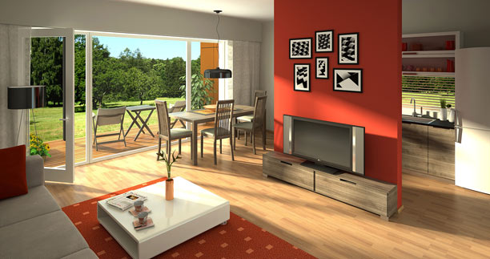
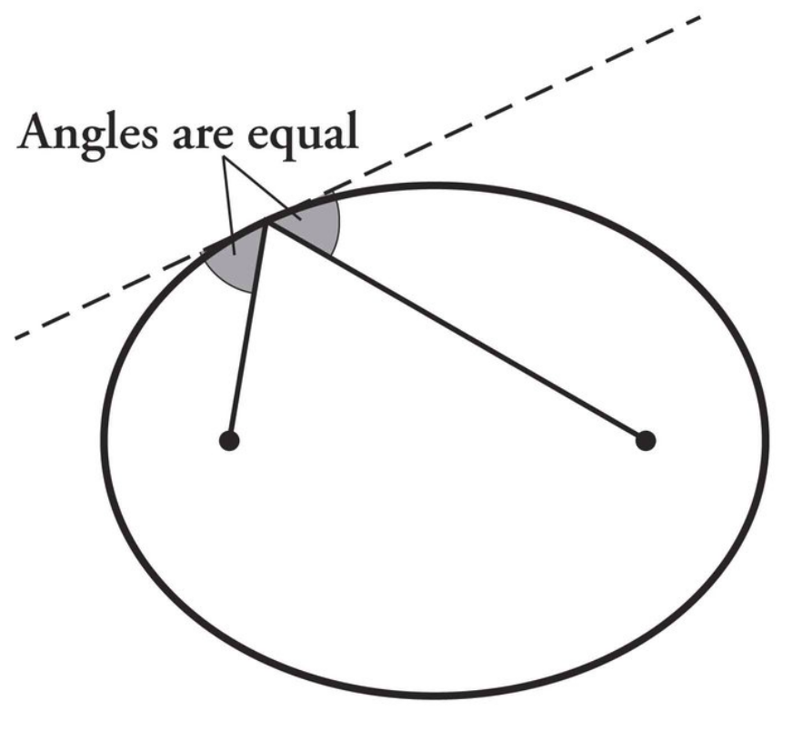
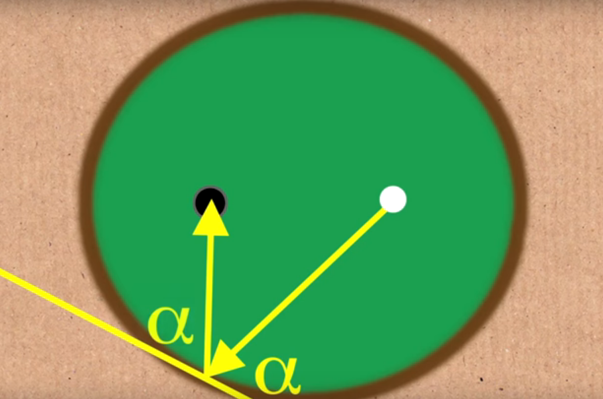
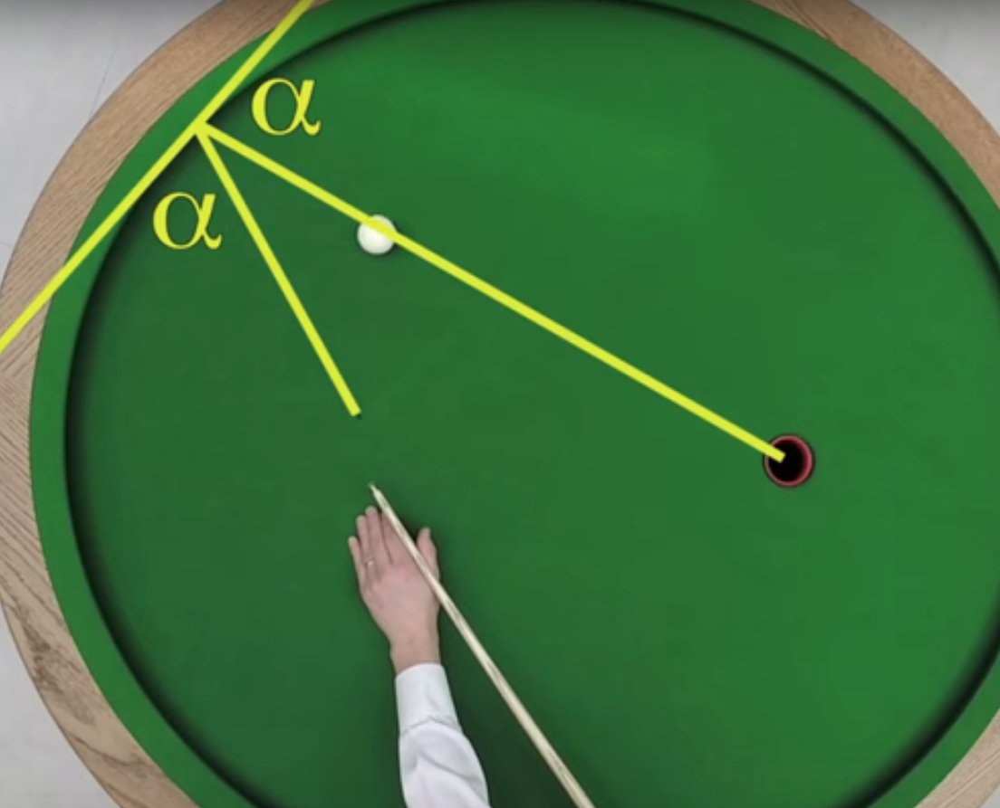
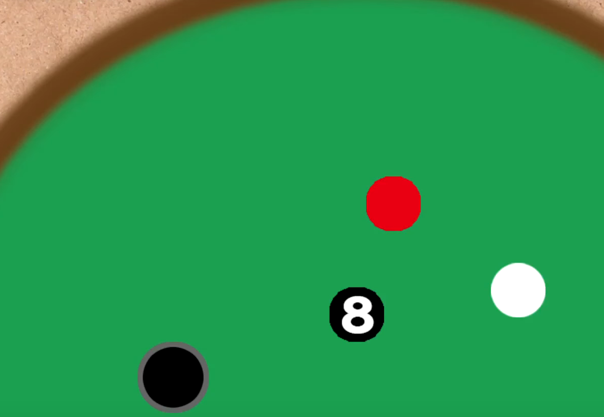
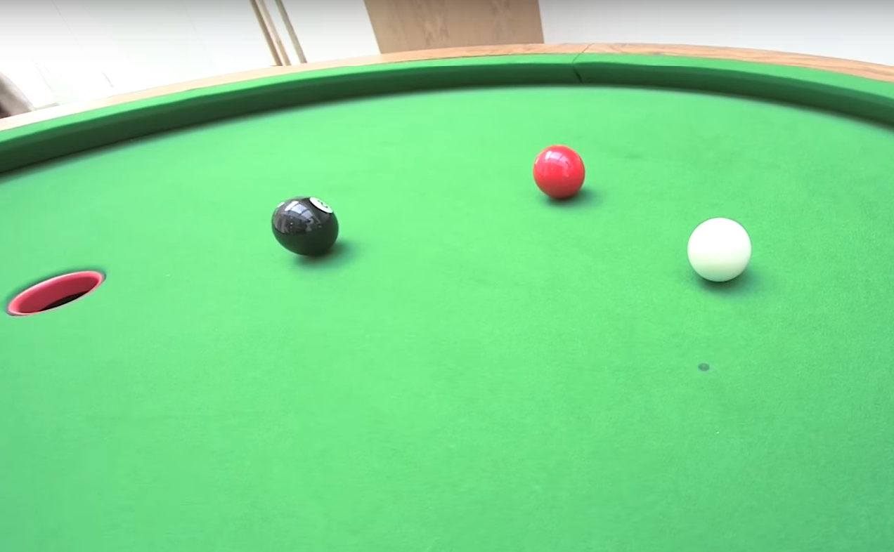
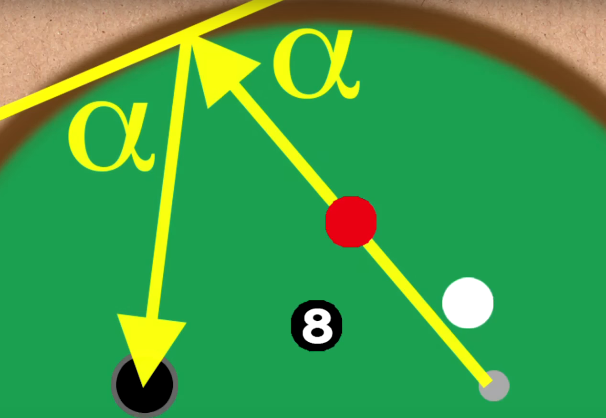
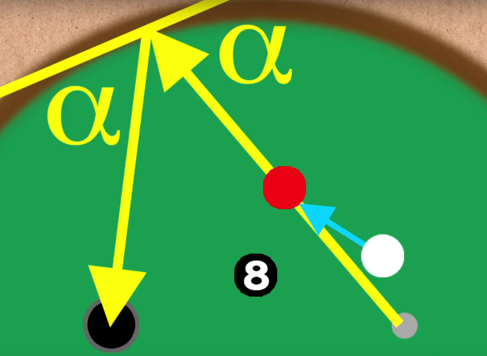
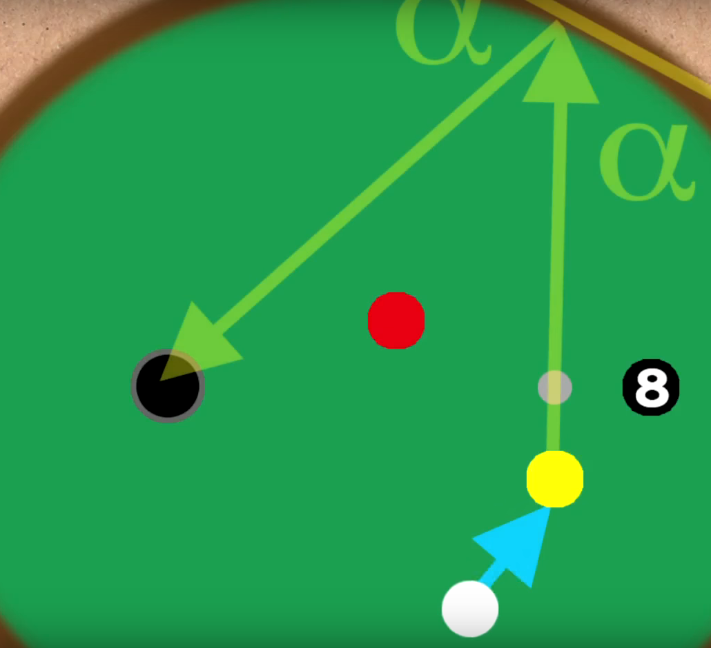

- 
-

-

Elliptical Billiard:

How to beat your friend!
You have already noticed that our billiard table has the shape of an ellipse. If you have not done it yet, we strongly suggest you to play a game, so you will get some intuition about how the playing differs from rectangular billiard and what the similarities are.
Like in the usual billiard, the bouncing of the ball from the wall follows the reflections law: The angle of incidence equals to the angle of reflection. The angle that is meant here must be measured with respect to the tangent of the wall at the point of the incidence. But next we will take to the use the elliptical form of the table.
Mathematical fact
We already mentioned the definition of an ellipse: each point on the ellipse has exactly the same sum of the distances from the two focus points. Using geometry, one can deduce that this implies A tangent line at any point of an ellipse makes the same angle to both of the focus points.

Combining the above mathematical observation with the reflection law, one concludes
A ball coming from a focus point will, after one reflection from the boundary, pass the other focus point.
One should however remark that in reality, due to the properties of the wall, friction, the spin of the ball and so on, the above law might not work perfectly outside the idealisation of frictionless surface and perfectly elastic boundary.
Nevertheless, the above mathematical fact is the key trick to keep in mind for beating your friend!
How to use the above fact
Also watch Numberphile video on YouTube.
In the case of a single ball, one can pocket a ball as in the picture below. Notice that the starting point of the trajectory of the white ball is the focus marked to the table with a dark spot.
|  |  |
Let is increase the difficulty and consider a ''pool-like'' situation where a ball has to be pocketed using another ball as described in the picture below:
|  |  |
We need to pocket the red ball and simultaneously try to not touch the black ball. If we were allowed to directly touch the red ball, we know how to proceed: hit the red ball as if it was coming from the focus point, then it will go to the pocket.

This means that now we need to hit the white ball so that the red ball gets the push exactly from the direction of the focus point:

The following is the demonstration of the same strategy in a different situation
In some situations, it is useful to notice that we may also give a push that leads the ball to be pocketed (yellow in the picture below) to pass the focus point. Also this leads the yellow ball to the pocket according to the law we described.

Follow-up
-
More about in
- Numberphile
- Basic facts about an ellipse on Khan Academy: Conic Sections Khan Academy: Foci of an ellipse
Galtonin quincunx
Galtonin quincunx, also known as the bean machine or quincunx, is a device invented by Sir Francis Galton. Aina pallon osuessa naulaan se pomppaa oikealle tai vasemmalle samalla todennäköisyydellä
$p_{vasen}=q_{oikea}=1/2$.
Tämä tapahtuu jokaisella naularivillä, joita on yhteensä $N$
kappaletta. Pallo päätyy lopulta kouruun numero
$n$vasemmalta laskien (missä
$0\leq n \leq N$) täsmälleen siinä tapauksessa, että se on pomppinut yhteensä
$n$kertaa oikealle. Kunkin polun todennäköisyys on sama
$1/2N$, mutta keskelle johtaa useampi polku kuin laidoille. Kouruun
$n$ johtaa polkua, joten todennäköisyys päätyä sinne on
$P(n|N) = \binom{N}{n} p_{vasen}^n q_{oikea}^{N-n} = \binom{N}{n} 2^{-N}$
Kun
$N$ on riittävän suuri, saatu jakauma muistuttaa Gaussin käyrää. Täsmällisesti tämän kertoo keskeinen raja-arvolause, jota ensimmäisten joukossa tutki suomalainen matemaatikko Jarl Waldemar Lindeberg.
Galtonin quincunx ilmentää kaaosta eli sekasortoa: vaikka yksittäisen pallon rataa ei voida ennustaa (rata on herkkä alkuarvoille), niin tapahtumien tilastolliset ominaisuudet ovat ennustettavissa, janämä ominaisuudet eivät ole lainkaan herkkiä alkuarvoille: laite tuottaa suurella varmuudella Gaussin käyrää muistuttavan jakauman.
Follow-up
- 1. IFA Galton Board: from order to Chaos. Youtube video
- 2. Central Limit Theorem Khan Academy
- 3. Sir Francis Galton Wikipedia